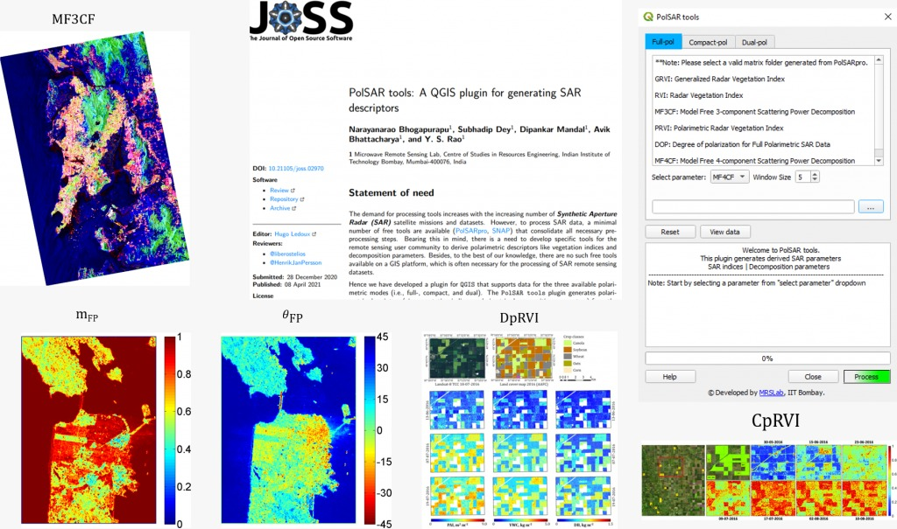

PolSAR tools : A QGIS plugin for generating SAR descriptors
Have you ever wondered to use SAR data in a GIS platform and struggled a lot for vaulting between dedicated SAR platforms and GIS tools! Now, there we introduce a solution through our developed PolSARtools as QGIS plugin. Our MRSLab team united advanced polarimetric radar variables for distinct acquisition modes of SAR for various applications in the context of agriculture, urban, land applications.
In the spirit of open science, the python based plugin in QGIS would provide not only the radar but also the whole geoscience community a platform by facilitating comparative analysis of cross-site experiments for robustness. Most importantly, this openness will promote uptake of PolSAR-based approaches to operations.
Given the advanced development and the breadth of the imaging system covered from dual, compact and full polarimetric modes, this toolbox is a cafeteria for anyone interested in applications as well as development towards the challenging radar science.
Read more at: 10.21105/joss.02970
Git repository: Click here
